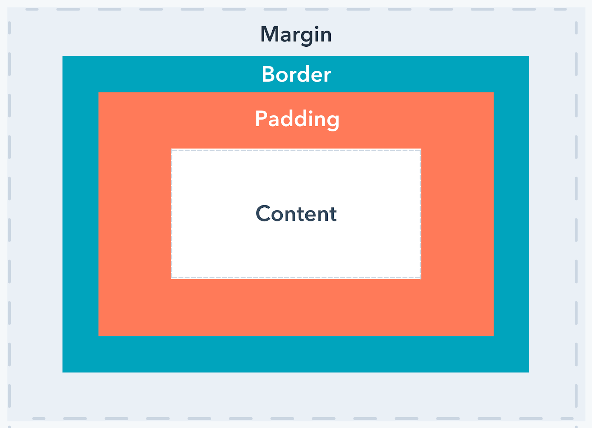
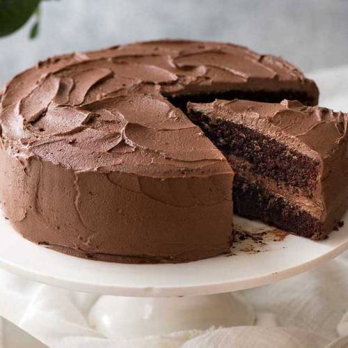

September 11, 2021
To begin, CSS language is what makes a website look the way it does because it adds style attributes to HTML, which is the language of the web which form the building-blocks of a website.
In CSS we often talk about Margins, Borders, Padding, and Content. But what are all these concepts and what do they mean? They can be explained visually in what's known as the Box Model
A Webpage, which is under-the-hood a page of HTML code, is a collection of Elements and each of those elements are represented by these four concepts of the Box Model. First let me explain what these concepts are, using something we all know:
Chocolate Cake!
So with this now as our very familiar (and very yummy) frame of reference we can move from the inside out and it breaks down like this:
Mmm, delicious...wait, I'm getting off track, the point is, it's good to know how these concepts can be defined when you begin to manipulate them on an HTML element using CSS. Using the CSS concepts border, padding, and margin, you can change the size of each of these attributes of an element which talks to the element's HTML and thus changes how it appears on a webpage. Margin for example can change the white space outside your element in relation to other elements and Padding changes that space inside an element perhaps to frame an image with white space inside a dark border. So border always separates the padding and margin even it's not set to be visible. CSS border can be used to accentuate the look of an element when a width and weight is applied.
Every single thing on a webpage has these four attributes and CSS is a powerful and robust tool for organising these elements into a visually digestible webpage. Have fun experimenting and always remember: if you get stuck, Google is your friend.
Sources used for research and graphics: Google, CSS Margin vs. Padding: What's the Difference?, and Chocolate Cake Recipetineats